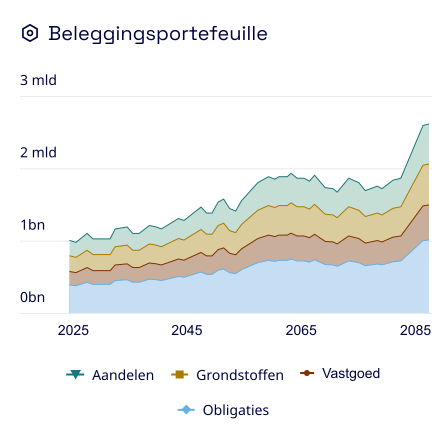
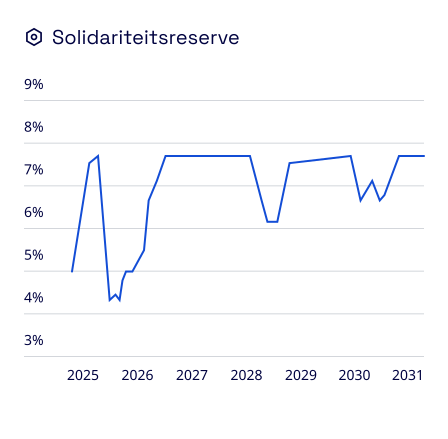
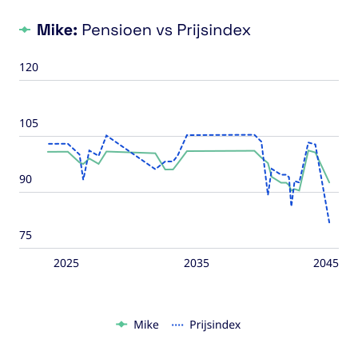
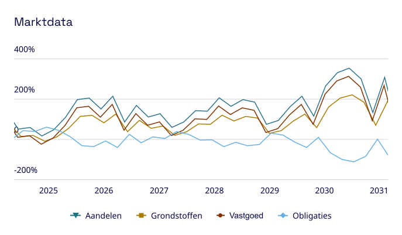
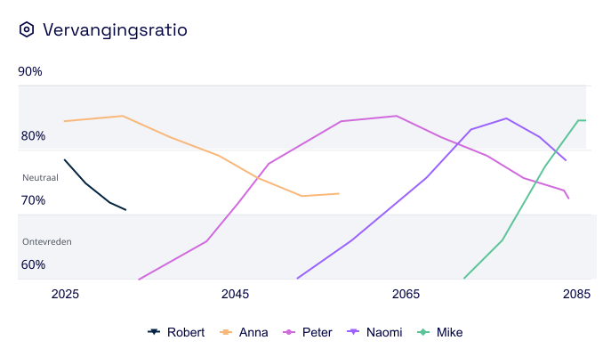

<template id="scene3-charts-template">
  <div id="scene3-charts" data-composition-id="scene3-charts" data-width="1920" data-height="1080">

    <link rel="preconnect" href="https://fonts.googleapis.com">
    <link rel="preconnect" href="https://fonts.gstatic.com" crossorigin>
    <link href="https://fonts.googleapis.com/css2?family=Noto+Sans:wght@700;900&display=swap" rel="stylesheet">

    <div id="sc3-stage" class="clip"
         data-start="0" data-duration="6" data-track-index="0"
         style="position:absolute; inset:0; width:1920px; height:1080px;
                display:flex; align-items:center; justify-content:center;">

      <!-- Tablet — al zichtbaar en wazig (eindstaat scene2) -->
      <div id="sc3-tablet-frame">
        <div id="sc3-tablet-camera"></div>
        <div id="sc3-db-window">
          
        </div>
        <div id="sc3-tablet-home"></div>
      </div>

      <!-- Caption — blijft staan vanuit scene2, zelfde positie -->
      <div id="sc3-caption">Doorleef verschillende scenario's</div>

      <!-- Golf 0: Profielkaarten — verborgen (scene3 start zonder profielkaarten) -->
      <div id="sc3-profiles-layer">
        <div class="sc3-profile-wrap" id="sc3-profile-1">
          
        </div>
        <div class="sc3-profile-wrap" id="sc3-profile-2">
          
        </div>
        <div class="sc3-profile-wrap" id="sc3-profile-3">
          
        </div>
      </div>

      <!-- Golf 1: Eerste 3 grafiekkaarten — dalen vanuit boven, verdwijnen daarna naar beneden -->
      <div id="sc3-wave1-layer">
        <div class="sc3-card-wrap" id="sc3-w1-card-1">
          
          <div class="sc3-line-cover" id="sc3-lc-1"></div>
        </div>
        <div class="sc3-card-wrap" id="sc3-w1-card-2">
          
          <div class="sc3-line-cover" id="sc3-lc-2"></div>
        </div>
        <div class="sc3-card-wrap" id="sc3-w1-card-3">
          
          <div class="sc3-line-cover" id="sc3-lc-3"></div>
        </div>
      </div>

      <!-- Golf 2: Laatste 2 grafiekkaarten — gecentreerd, dalen vanuit boven -->
      <div id="sc3-wave2-layer">
        <div class="sc3-card-wrap" id="sc3-w2-card-1">
          
          <div class="sc3-line-cover" id="sc3-lc-4"></div>
        </div>
        <div class="sc3-card-wrap" id="sc3-w2-card-2">
          
          <div class="sc3-line-cover" id="sc3-lc-5"></div>
        </div>
      </div>
    </div>

    <style>
      #scene3-charts { background: #ceecff; overflow: hidden; }

      /* Caption — zelfde positie als scene2, direct zichtbaar */
      #sc3-caption {
        position: absolute;
        top: 870px; left: 0;
        background: #000f47;
        color: #ffffff;
        font-family: "Noto Sans", system-ui, sans-serif;
        font-weight: 700;
        font-size: 52px;
        letter-spacing: 0.01em;
        padding: 22px 48px;
        white-space: nowrap;
        z-index: 5;
      }

      /* Tablet al zichtbaar en wazig — geen entrance animatie */
      #sc3-tablet-frame {
        position: relative;
        width: 1160px;
        height: 800px;
        background: #e0e0e0;
        border-radius: 20px;
        padding: 22px;
        box-sizing: border-box;
        box-shadow: 0 20px 60px rgba(0,0,0,0.20), 0 6px 20px rgba(0,0,0,0.12);
        z-index: 1;
        filter: blur(6px);
      }
      #sc3-tablet-camera {
        position: absolute; top: 5px; left: 50%; margin-left: -4px;
        width: 8px; height: 8px; border-radius: 50%; background: #aaa; z-index: 2;
      }
      #sc3-tablet-home {
        position: absolute; bottom: 5px; left: 50%; margin-left: -40px;
        width: 80px; height: 4px; border-radius: 2px; background: #aaa;
      }
      #sc3-db-window {
        position: relative; width: 1116px; height: 756px;
        border-radius: 8px; overflow: hidden;
      }
      #sc3-db-img {
        position: absolute; top: 0; left: 0; width: 1116px; height: auto;
      }

      /* Profielkaarten — al zichtbaar (eindpositie scene2) */
      /* 3×490 + 2×24 = 1518px, left=(1920-1518)/2=201px, top=(1080-466)/2=307px */
      #sc3-profiles-layer {
        position: absolute; top: 307px; left: 201px;
        width: 1518px; display: flex; gap: 24px; z-index: 3;
      }
      .sc3-profile-wrap {
        background: #ffffff; border-radius: 25px; padding: 20px;
        box-shadow: 0 12px 40px rgba(0,0,0,0.15), 0 4px 12px rgba(0,0,0,0.10);
        flex-shrink: 0; opacity: 1;
      }
      .sc3-profile-wrap img { display: block; width: 450px; height: 426px; }

      /* Golf 1 — 3 grafiekkaarten (hidden) */
      /* 3×488 + 2×24 = 1512px, left=(1920-1512)/2=204px, top=(1080-479)/2=301px */
      #sc3-wave1-layer {
        position: absolute; top: 301px; left: 204px;
        width: 1512px; display: flex; gap: 24px; z-index: 4;
      }

      /* Golf 2 — 2 grafiekkaarten, samen zelfde breedte als golf 1 (1512px) */
      /* Elke kaart: flex:1 → (1512 - 24) / 2 = 744px; beeld gecentreerd erin */
      #sc3-wave2-layer {
        position: absolute; top: 301px; left: 204px;
        width: 1512px; display: flex; gap: 24px; z-index: 4;
      }

      .sc3-card-wrap {
        position: relative;
        background: #ffffff; border-radius: 25px; padding: 20px;
        box-shadow: 0 12px 40px rgba(0,0,0,0.15), 0 4px 12px rgba(0,0,0,0.10);
        flex-shrink: 0; opacity: 0;
      }
      .sc3-card-wrap img { display: block; width: 448px; height: 439px; }

      /* Witte cover over het grafiekgebied (SVG x=20,y=70,w=412,h=244 + 20px padding) */
      .sc3-line-cover {
        position: absolute;
        left: 40px; top: 90px;
        width: 412px; height: 244px;
        background: #ffffff;
        pointer-events: none;
      }
      /* Wave2 covers: SVG 687×401, schaalt naar 704px (×1.025) */
      #sc3-lc-4 { left: 45px; top: 96px; width: 655px; height: 267px; }
      #sc3-lc-5 { left: 41px; top: 92px; width: 661px; height: 250px; }

      #sc3-wave2-layer .sc3-card-wrap {
        flex: 1;
        display: flex;
        align-items: center;
        justify-content: center;
      }
      #sc3-wave2-layer .sc3-card-wrap img {
        width: 100%;
        height: auto;
      }
    </style>

    <script>
      window.__timelines = window.__timelines || {};
      const tl = gsap.timeline({ paused: true });

      // Dashboard scrollt door naar het onderste gedeelte (graphs/charts)
      tl.fromTo("#sc3-db-img", { y: -140 }, { y: -380, duration: 2.0, ease: "sine.inOut" }, 0);

      // Profielkaarten verdwijnen via de onderzijde van het scherm
      tl.to("#sc3-profile-1", { y: 700, opacity: 0, duration: 0.4, ease: "power2.in" }, 0.0);
      tl.to("#sc3-profile-2", { y: 700, opacity: 0, duration: 0.4, ease: "power2.in" }, 0.1);
      tl.to("#sc3-profile-3", { y: 700, opacity: 0, duration: 0.4, ease: "power2.in" }, 0.2);

      // Golf 1: 3 grafiekkaarten dalen vanuit boven (na profielkaarten)
      tl.fromTo("#sc3-w1-card-1", { opacity: 0, y: -500 }, { opacity: 1, y: 0, duration: 0.4, ease: "power2.out" }, 0.8);
      tl.fromTo("#sc3-w1-card-2", { opacity: 0, y: -500 }, { opacity: 1, y: 0, duration: 0.4, ease: "power2.out" }, 0.9);
      tl.fromTo("#sc3-w1-card-3", { opacity: 0, y: -500 }, { opacity: 1, y: 0, duration: 0.4, ease: "power2.out" }, 1.0);

      // Golf 1: grafieklijntjes onthullen van links naar rechts (cover schuift weg)
      tl.fromTo("#sc3-lc-1", { scaleX: 1, transformOrigin: "right center" }, { scaleX: 0, duration: 0.8, ease: "power2.inOut" }, 1.3);
      tl.fromTo("#sc3-lc-2", { scaleX: 1, transformOrigin: "right center" }, { scaleX: 0, duration: 0.8, ease: "power2.inOut" }, 1.45);
      tl.fromTo("#sc3-lc-3", { scaleX: 1, transformOrigin: "right center" }, { scaleX: 0, duration: 0.8, ease: "power2.inOut" }, 1.6);

      // Golf 1: 1.5s standtijd na laatste kaart (in bij 1.4s) → exit start 2.9s
      tl.to("#sc3-w1-card-1", { y: -600, opacity: 0, duration: 0.4, ease: "power2.in" }, 2.9);
      tl.to("#sc3-w1-card-2", { y: -600, opacity: 0, duration: 0.4, ease: "power2.in" }, 3.0);
      tl.to("#sc3-w1-card-3", { y: -600, opacity: 0, duration: 0.4, ease: "power2.in" }, 3.1);

      // Golf 2: vanuit links + rechts, 0.2s na golf 1 volledig weg (3.5s)
      tl.fromTo("#sc3-w2-card-1", { opacity: 0, x: -1000 }, { opacity: 1, x: 0, duration: 0.5, ease: "power2.out" }, 3.7);
      tl.fromTo("#sc3-w2-card-2", { opacity: 0, x: 1000 }, { opacity: 1, x: 0, duration: 0.5, ease: "power2.out" }, 3.7);

      // Golf 2: grafieklijntjes onthullen van links naar rechts
      tl.fromTo("#sc3-lc-4", { scaleX: 1, transformOrigin: "right center" }, { scaleX: 0, duration: 0.8, ease: "power2.inOut" }, 4.3);
      tl.fromTo("#sc3-lc-5", { scaleX: 1, transformOrigin: "right center" }, { scaleX: 0, duration: 0.8, ease: "power2.inOut" }, 4.45);

      // 1.5s standtijd na golf 2 in beeld (in bij 4.2s) → scene 6s
      tl.set({}, {}, 6);

      window.__timelines["scene3-charts"] = tl;
    </script>
  </div>
</template>
